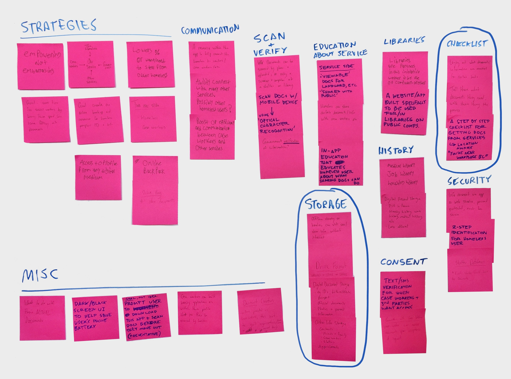
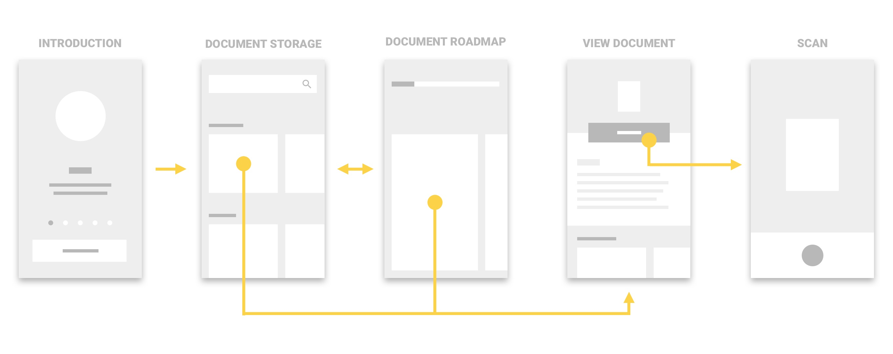

Research
Strategy
Interaction
Prototyping
Rocky Shah
Jeffrey Baldwin
Gabe Hendry
Fran Breden
Keepsafe scans and saves personal documents to the cloud so the homeless and their caseworkers can access them for social housing applications.
Keepsafe was created in 4 weeks for a course on interface design. We saw the opportunity to frame our brief as an exercise in service design - the service being Vancouver's social housing system.
While there are huge forces threatening Vancouver’s homeless population including the opioid *and* housing crises, we wanted to scale in to learn more about specific challenges facing those within homeless shelters.
Currently, individuals staying in shelters get access to caseworkers who assist in their social housing application. A caseworker’s first meeting goes like this: individuals unpack their belongings to locate personal documents. Most often, essential items such as a driver’s license or birth certificate are missing from the picture. From this point forward, countless meetings and applications are needed to regain lost documents.
From our interviews with these caseworkers, we realized that jumping through these additional hoops is what sets backs the social housing application by weeks and even months. It’s tedious and frustrating for all parties.
Through our interviews with caseworkers, we discovered two insights. First, it surprised us to learn that 70% the homeless bring mobile phones to their meetings with caseworkers. They informed us that their mobile devices were primary access points to the internet, but that losing them was very normal. Secondly, we learned that the homeless often switch shelters and social service providers due to issues of trust, isolating all previous paperwork from past shelters. With these insights, we framed our questions to ask:
How might we strengthen the relationship between Vancouver’s homeless seeking social housing and their caseworkers?
How might the progress made between these actors be preserved for future relationships?
Keeping documents safe and accessible means reaching housing sooner. Instead of relying on organizations to store local photocopies of documents, the homeless could store documents digitally, making them the gatekeepers of their personal information. We used a service blueprint to identify points where KeepSafe could realistically intervene.
From this blueprint, we used affinity mapping to identify two primary focuses: document storage and document planning.
Next I led the team in solidifying KeepSafe’s primary flow - uploading documents. This step also helped us determine much of the high-level information architecture.
With the risk of losing personal documents, KeepSafe provides a secure place to store and access them as digital copies.
Within each card, they can scan and upload their copy or just learn more about each. KeepSafe’s copy is written for a 6th grade reading level and uses larger type for those with impaired vision. Uploading documents is chunked into smaller actions like scanning, cropping, and sharing with their caseworker.
Currently, filling in applications for missing documents requires the homeless to reference details from existing documents. But through early interviews with caseworkers, we identified this to be a challenging task for the homeless.
KeepSafe makes all document info searchable from the documents tab. In earlier iterations, we had a local search feature within each document page, but through user-testing determined that this feature was utilized more at the front end of this task flow. Within this flow, we also embedded an FAQ module to help answer momentary questions and concerns about each document.
To help caseworkers learn about their client's history, the homeless can give caseworkers access to documents by sharing an access code during their first meeting. Giving explicit consent to share information means that stronger trust and security is built.
By syncing accounts, KeepSafe shows the homeless an ordered list documents they need while also explaining the reasons why each document matters. If users need to apply for documents, they can send scanned paperwork through KeepSafe, reducing this wait time.
Stepping back to think about my work in the team, I realized it was really important to communicate ideas as much as possible; organizing research, sharing sketches, and calling out prototype details made huge differences to our process.
Most importantly, I gained a new appreciation for researching services and mapping them out so they seem less like intimidating problems and more like actionable opportunities.